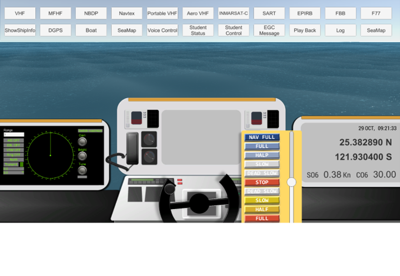
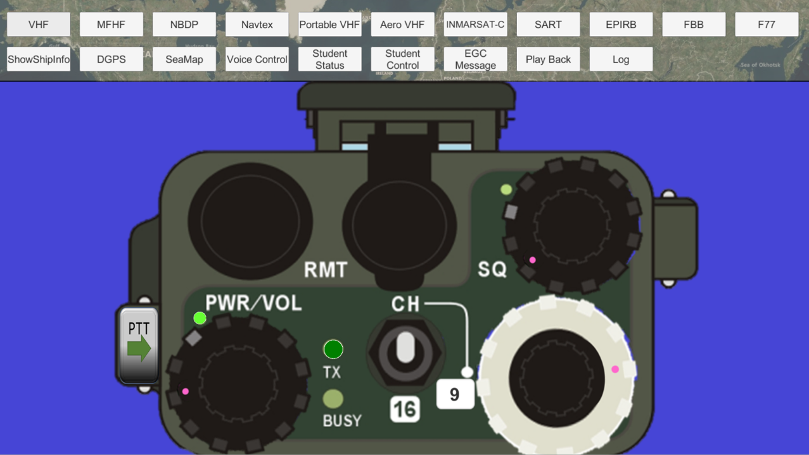
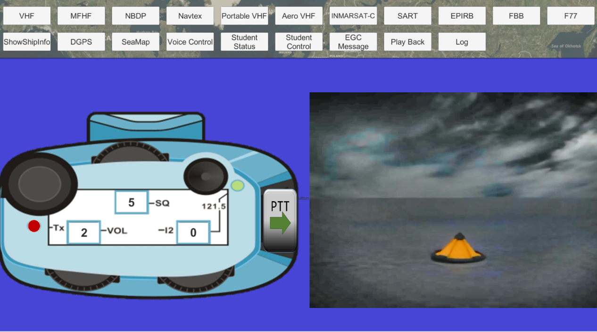
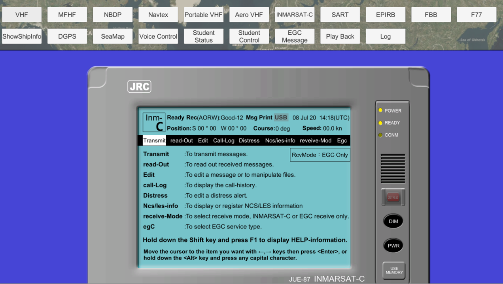
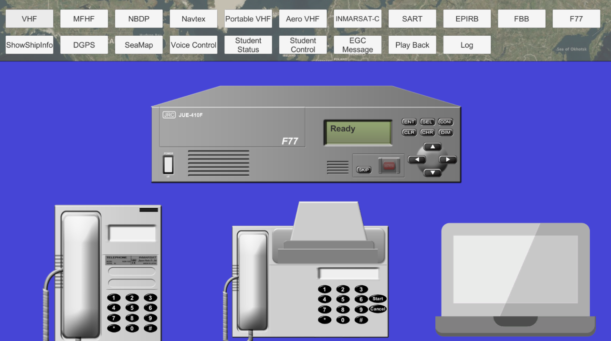
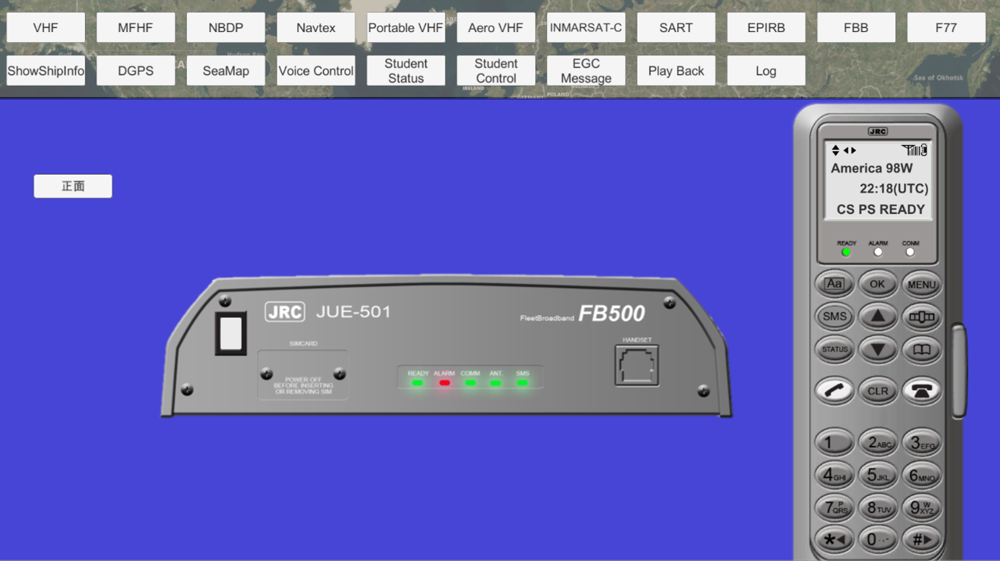
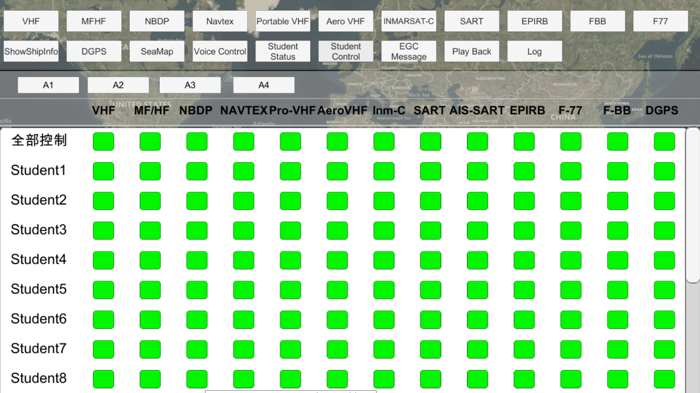
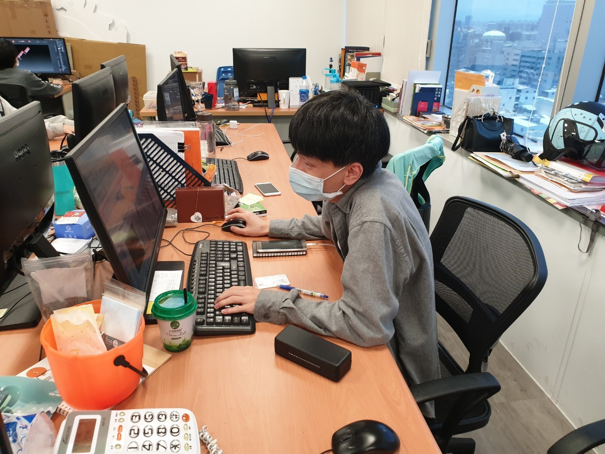
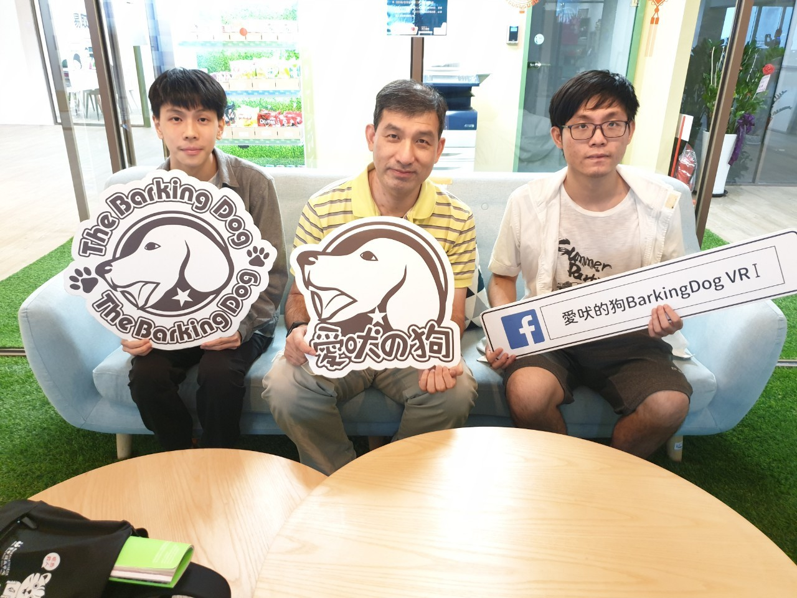
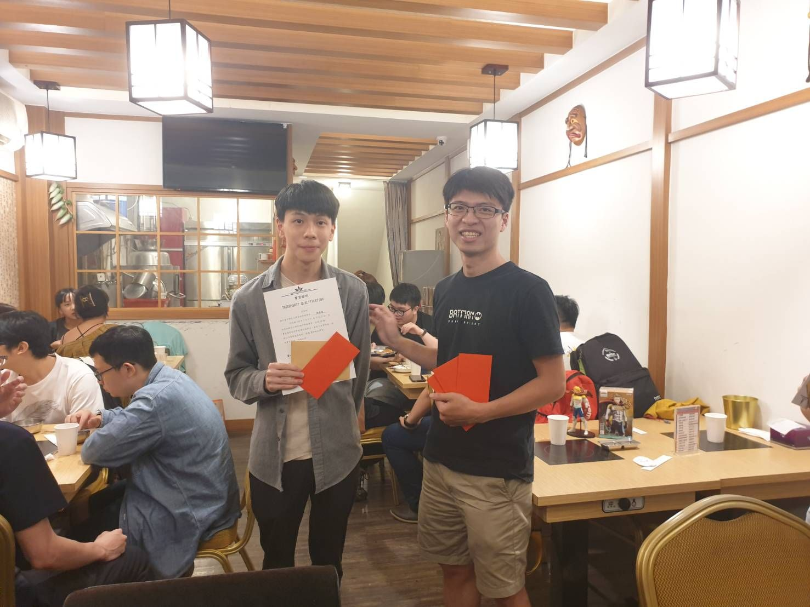

關於我
公務車申請系統
護理工作車系統
藏藍回音
海上遇險安全系統
海上遇險安全系統(GMDSS)
模擬船上各個緊急通訊裝置，當船隻遇險時該如何利用裝置進行船隻之間或與岸台的發送訊號、定位及通訊等，並加入監控台功能讓老師了解個別學生連線狀況並遠端進行調整等。

開發團隊
人數
2 Unity3D工程師
1 Unity3D實習生
時程
2019/6~2019/12
負責事項
個別儀器製作
簡單美術繪製
運用技術
系統功能
學生
SART
AIS-SART
Portable-VHF
Aero-VHF
Inmarsat-C
F77
FBB
DGPS
船隻操作
老師
雜訊控制
裝置控制
狀態檢視
開發成果
利用Unity所提供的物理引擎模擬船隻運行，並透過Photon2、RPC進行語音連線

Portable-VHF

Aero-VHF
透過Photon2、RPC進行訊息的傳遞

Inmarsat-C

F77

FBB
老師控制台進行監控、傳送訊號給船隻

裝置控制
岸台訊息傳送
後記
起初對於Unity操作上不熟悉及腳本上撰寫結構不夠扎實，以致在程式拓展上而已發揮，隨著越來越熟練漸漸能將功能一步到位，並且對於程式的資料型態、腳本的生命週期等運用技巧上有所提升；依照專案推進接觸到Photon技術，一開始對於其運行原理不理解在邏輯上一直碰壁，跟著網路的教學並經由實戰過程中學習，再透過主管打下架構以及提點進行運用，達到船隻與船隻之間的收發訊息以及語音通話等；為了讓老師可以即時的看到學生操作的狀態加以製作中控台，串聯起每個裝置並且可以透過中控台進行學生各個裝置的開啟。
對於訊息的傳遞上也受到磨練，不管是程式的可讀性或者人際溝通上，因為陌生所以鮮少溝通只是一股腦的依照自己認知進行開發，缺少確認需求的環節導致不符合需求而拖慢了進度，此外主動說明現在所面臨的問題以及定期回報開發進度等，讓主管得以掌握狀況。


